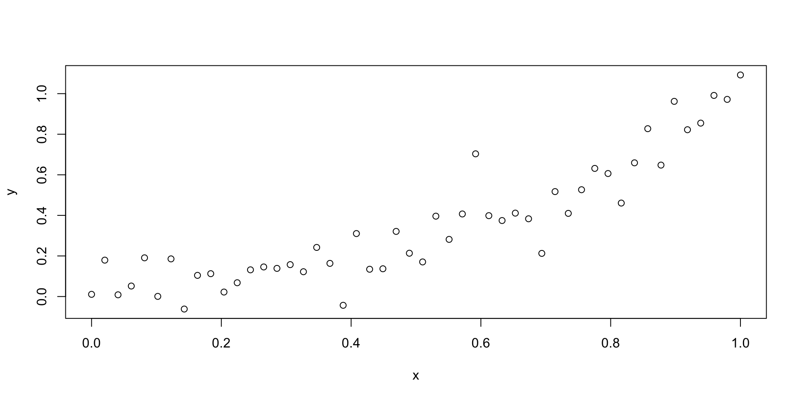
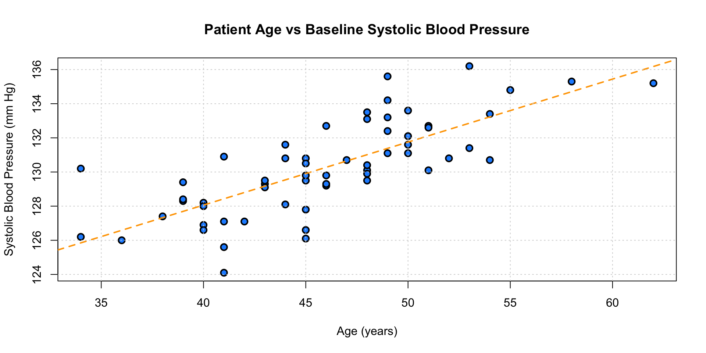

# Install packages from CRAN
install.packages("tidyverse")
install.packages("survival") # Tools for survival analysis
install.packages("rms") # Regression modeling strategies
library("tidyverse")
library("survival")
library("rms")Introduction to R
Kellin Rumsey
Introduction
Hi I’m Kellin.
You can find these slides at https://github.com/knrumsey/NW_R_Course
Goals for the Next Hour
Convince you that R is worth using.
Convince you that R is easy to use.
Perform a simple analysis with a (fake) data set.
Provide you with resources for learning R on your own.
Some Caveats and Remarks
You can’t learn all of R in an hour.
Ask questions!
Assignments.
You can look a lot of this stuff up.
R what and why?
R is a free to use and open source programming language which has been heavily adopted for statistical research in academia and statistical analysis in many industries.
Easy to use.
Designed for Statistics.
Reproducible and transparent research.
Publication ready data visualization.
Open source.
RStudio what and why?
RStudio is an interface for writing and “running” R code.
- RStudio makes writing R code easier and faster.
- Stay organized.
RStudio Panes

R packages
R has a lot of useful functions that are shipped with the base version. But sometimes we need functionality not included by base R.
An R package is a bundle of R code that the author has made readily available to us.
Install packages (only have to do this once) with the
install.packages()function.Tell R you want to use a package with the
library()function.Lots of R packages are available on CRAN.
Tidyverse what and why?
The tidyverse is an R package with lots of tools for statistical analysis/research.
R Resources
For learning R on your own.
RStudio provides a comprehensive set of resources for learning R, including interactive tutorials, cheat sheets, and webinars. Their website (https://education.rstudio.com/) is a great starting point for beginners.
Swirl: Swirl is an R package that provides interactive R programming lessons directly within the R console. It’s a great way to learn R in a hands-on manner, as it guides you through exercises and quizzes step-by-step.
R for Data Science is a good intro level book (free online) for learning R. This book will teach you how to do data science with R: You’ll learn how to get your data into R, get it into the most useful structure, transform it and visualize.
Advanced R is another free online book if you really want to become an R programmer. The book is designed primarily for R users who want to improve their programming skills and understanding of the language.
The Google and chatGPT! Don’t underestimate these resources.
A Sample Analysis
We’ll come back to this later!
This is for future reference.
Focus on how much can be accomplished with very little code.
Read data
# Read data into R (csv format is easiest)
path = "data/HypotheticalData1.csv"
data = read_csv(path)
# Display data
data# A tibble: 60 × 6
`Patient ID` Age Treatment `Baseline SBP` `Post Treatment SBP` Headache
<dbl> <dbl> <chr> <dbl> <dbl> <chr>
1 1 45 Control 131. 132. No
2 2 43 Control 129. 126. No
3 3 44 Control 132. 136. No
4 4 46 Control 129. 134 No
5 5 49 Control 136. 137. No
6 6 41 Control 127. 128. No
7 7 41 Control 124. 120. No
8 8 51 Control 130. 131. Yes
9 9 48 Control 130. 134. No
10 10 45 Control 126. 127. No
# ℹ 50 more rowsExtract the “Age” column
45 43 44 46 49 41 41 51 48 45 34 51 44 39 36 48 46 50 45 44 51 49 47 50 54 49 42 41 45 46 50 53 58 40 49 43 50 40 62 49 40 43 54 39 39 52 45 48 38 55 48 45 48 45 41 53 34 40 46 48 Min. 1st Qu. Median Mean 3rd Qu. Max.
34.00 41.75 46.00 45.98 49.25 62.00 Make histogram of age
Make it pretty
Make it prettier (with ggplot)
Plot age vs Baseline SBP
Add regression line to plot
Make a new column (decrease in SBP)
Compare across treatments
Compare with ggplot
Two sample T-test
data_control = filter(data, Treatment == "Control")
data_medX = filter(data, Treatment == "Medication X")
t.test(data_control$`SBP Decrease`, data_medX$`SBP Decrease`,
alternative="two.sided")
Welch Two Sample t-test
data: data_control$`SBP Decrease` and data_medX$`SBP Decrease`
t = -9.3882, df = 57.174, p-value = 3.505e-13
alternative hypothesis: true difference in means is not equal to 0
95 percent confidence interval:
-7.756913 -5.029754
sample estimates:
mean of x mean of y
-0.1733333 6.2200000 Adverse Effects (Headache?)
Or, use a better test!
Control Medication X
No 27 24
Yes 3 6
Fisher's Exact Test for Count Data
data: tab
p-value = 0.4716
alternative hypothesis: true odds ratio is not equal to 1
95 percent confidence interval:
0.4184927 15.2300576
sample estimates:
odds ratio
2.220255 We can build a linear model
Call:
lm(formula = `SBP Decrease` ~ Age * Treatment, data = data)
Residuals:
Min 1Q Median 3Q Max
-5.1001 -1.5217 -0.0568 1.7667 5.2930
Coefficients:
Estimate Std. Error t value Pr(>|t|)
(Intercept) 1.39644 4.94950 0.282 0.779
Age -0.03453 0.10833 -0.319 0.751
TreatmentMedication X 2.33928 6.10179 0.383 0.703
Age:TreatmentMedication X 0.08795 0.13234 0.665 0.509
Residual standard error: 2.67 on 56 degrees of freedom
Multiple R-squared: 0.6073, Adjusted R-squared: 0.5863
F-statistic: 28.87 on 3 and 56 DF, p-value: 2.052e-11Two-way ANOVA
data$`Age Over 40` = (data$Age > 40)
fit = lm(`SBP Decrease`~`Age Over 40`*Treatment, data=data)
anova(fit)Analysis of Variance Table
Response: SBP Decrease
Df Sum Sq Mean Sq F value Pr(>F)
`Age Over 40` 1 23.87 23.87 3.3967 0.07062 .
Treatment 1 589.46 589.46 83.8827 9.999e-13 ***
`Age Over 40`:Treatment 1 9.73 9.73 1.3851 0.24421
Residuals 56 393.52 7.03
---
Signif. codes: 0 '***' 0.001 '**' 0.01 '*' 0.05 '.' 0.1 ' ' 1Get fancy with “machine learning”
Part 1: Variables and Vectors
R as a Calculator
Type the following commands into the RStudio Console
Functions
Open Rstudio and type the following commands into the Console.
Variables in R
Sometimes it is useful to store a value in a variable for later
Variables in R
Sometimes it is useful to store a value in a variable for later
Rules for Variable Names
Must begin with a letter
Can contain letters, numbers, and the symbol
_(also., but avoid this).Variable names cannot include spaces or special characters.
Case sensitive.
Cannot be a special keyword in R (like
if,while,function, etc)Should be descriptive (remember what your variables are if you come back a month later!)
Data Types in R
Numeric Data
So far we have looked at the numeric data type.
Data Types in R
Logical Data
An important data type (called Boolean in most languages). Only two values: TRUE or FALSE.
Data Types in R
Character Data
Strings of alpha numeric characters in between quotation marks.
Data Types in R
Objects
A variable can also contain a more sophisticated object.
Vectors in R
A vector is a ordered collection of variables of the same type.
# Define a vector
foo = c(1, 2, 3, 5, 7, 11)
foo
# Functions on a vector
length(foo) # how many elements in the vector?
sum(foo) # add the elements together
var(foo) # calculate the variance
# Extract values from a vector
foo[1] # Get the first value from foo
foo[c(2,4,6)] # Get the 2nd, 4th, and 6th value
foo[-2] # Get all values EXCEPT the 2ndVectors in R
A vector is a ordered collection of variables.
# Define a vector
foo = c(1, 2, 3, 5, 7, 11)
foo
# Functions on a vector
length(foo) # how many elements in the vector?
sum(foo) # add the elements together
var(foo) # calculate the variance
# Extract values from a vector
foo[1] # Get the first value from foo
foo[c(2,4,6)] # Get the 2nd, 4th, and 6th value
foo[-2] # Get all values EXCEPT the 2ndVectors in R
A vector is a ordered collection of variables.
# Define some vectors
foo = c(1, 2, 3, 5, 7, 11)
foo
# Functions on a vector
length(foo) # how many elements in the vector?
sum(foo) # add the elements together
var(foo) # calculate the variance
# Extract values from a vector
foo[1] # Get the first value from foo
foo[c(2,4,6)] # Get the 2nd, 4th, and 6th value
foo[-2] # Get all values EXCEPT the 2ndVectors in R
There are lots of ways to create vectors.
R Script
An R Script is a file with the .R extension that you write R code in.
It serves as a way to organize, document, and execute R code.
Highly reproducible.
Highly portable (you can send it to your friends for discussion over drinks).
R Script
- Open a new folder in your computer and call it
RCourse_yourname. - In RStudio, click
File -> New File -> R Script. - Type the following into the R script
R Script
- To execute the code you can
Source - run the whole script
Highlight any portion of code and type
cntrl + enter(orcommand+returnon mac)Click on a particular line and type
cntrl + enter(orcommand+returnon mac)
Assignment 1
- Make a new folder somewhere in your computer and give it a good name.
- Create a new R Project.
File -> New Project -> Existing Directoryand choose the new (outer folder) you made. - Open a R Script and save it to this folder with the file name
assigment1.R. - Use the following code to extract the age column from our hypothetical dataset.
Assignment 1
- Use the following R functions on the age data:
mean,sd,length. Save the returned values in a variable. - What is the age of the \(50^{th}\) patient? Save this in a new variable.
- Calculate the “z-score” corresponding to this patients age.
- Use the
cor()function to compute the correlation between age and SBP before treatment. (Hint: Type?corin console for help.)
Assignment 1
Assignment 1
Assignment 1
Assignment 1
Part 2: Data Frames and Tibbles
A Data Frame is an object in R that behaves essentially like a spreadsheet.
A Tibble is the a modernized and enhanced version of a Data Frame from the tidyverse package.
I will refer to these interchangeably and the differences don’t really matter much at this level.
Tibbles are generally designed to make things easier.
CSV Files
A csv file (comma separated values) is a simple format for storing data.
Basically an Excel spreadsheet without any bells and whistles.
Good practice for storing data
Always keep a “raw” version of your data.
One row per “observation”
One column per “variable”
Avoid leaving any blank rows or columns
Reading and Writing CSV’s
The functions used to read and write csv files are:
*Note: If you don’t have the tidyverse installed, you can use the functions read.csv() and write.csv() instead.
Reading and Writing CSV’s
Specific example.
Check the data folder.
Accessing a single column
Use the special R symbol $ to quickly get a column out of a data frame.
Filter and Select
The filter() and select() functions are incredibly useful. These functions are part of the dplyr package which is included with tidyverse.
Filter: Select rows based on some criteria.
Select: Select columns based on some criteria
Filter
Makes a new data frame with rows satisfying some criteria.
# Split data set by treatment
data_control = filter(data, Treatment == "Control")
data_medX = filter(data, Treatment == "MedX")
# Another way (get everything EXCEPT for control group)
data_medX = filter(data, Treatment != "Control")
# Can add multiple groups
data_foo = filter(data, Treatment == "Control",
Age >= 40,
Headache == "No")Filter
Makes a new data frame with rows satisfying some criteria.
# Split data set by treatment
data_control = filter(data, Treatment == "Control")
data_medX = filter(data, Treatment == "MedX")
# Another way (get everything EXCEPT for control group)
data_medX = filter(data, Treatment != "Control")
# Can add multiple groups
data_foo = filter(data, Treatment == "Control",
Age >= 40,
Headache == "No")Filter
Makes a new data frame with only the columns specified.
# Split data set by treatment
data_control = filter(data, Treatment == "Control")
data_medX = filter(data, Treatment == "MedX")
# Another way (get everything EXCEPT for control group)
data_medX = filter(data, Treatment != "Control")
# Can add multiple groups
data_foo = filter(data, Treatment == "Control",
Age >= 40,
Headache == "No")Select
Makes a new data frame with rows satisfying some criteria.
Select
Makes a new data frame with rows satisfying some criteria.
Select
Makes a new data frame with rows satisfying some criteria.
Select
Makes a new data frame with rows satisfying some criteria.
Mutate
Used to create new variables in your data frame.
Other Useful Functions
See the dplyr documentation for details (or search online, or ask chatGPT, or use the R help files with ?).
summarise(): Summarize data by collapsing multiple rows into a single summary.group_by(): Group data by one or more variables for subsequent operations.arrange(): Reorder rows based on column values.rename(): Rename columns.distinct(): Filter unique/distinct rows from a data frame.count(): Count the number of observations in each group.slice(): Extract specific rows from a data frame.
Assignment 2
- Make two new folders inside your main project directory called
dataandR. Save your R script inside the R folder. - Save (“write”) your data frame object as a csv inside the data folder. Feel free to open it in excel if you want.
- Suppose that patients \(7\), \(21\), and \(45\) have corrupted data. Use
filter()to remove them from the data set. - Use
mutate()to create a new column in the data frame which isTRUEif SBP decreased after treatment. - Use the
select()function to get a data frame (give it a new name) with only the columnsTreatment,HeadacheandSBP Decrease. - Use
filter()to create two new data frames separated by Treatment. Calculate the average SBP decrease for both datasets.
Assignment 2 (Solution)
Assignment 2 (Solution)
Assignment 2 (Solution)
# 4. Use mutate() to create a new column in the data frame which is TRUE if SBP decreased after treatment.
data = mutate(data, `SBP Decrease Logical` = (`Baseline SBP` > `Post Treatment SBP`),
.after = Treatment)
data# A tibble: 60 × 8
`Patient ID` Age Treatment `SBP Decrease Logical` `Baseline SBP`
<dbl> <dbl> <chr> <lgl> <dbl>
1 1 45 Control FALSE 131.
2 2 43 Control TRUE 129.
3 3 44 Control FALSE 132.
4 4 46 Control FALSE 129.
5 5 49 Control FALSE 136.
6 6 41 Control FALSE 127.
7 7 41 Control TRUE 124.
8 8 51 Control FALSE 130.
9 9 48 Control FALSE 130.
10 10 45 Control FALSE 126.
# ℹ 50 more rows
# ℹ 3 more variables: `Post Treatment SBP` <dbl>, Headache <chr>,
# `SBP Decrease` <dbl>Assignment 2 (Solution)
# 5. Use the select() function to get a data frame (give it a new name) with only the columns Treatment, Headache and SBP Decrease.
data_mod = select(data, c("Treatment", "Headache", "SBP Decrease"))
data_mod# A tibble: 60 × 3
Treatment Headache `SBP Decrease`
<chr> <chr> <dbl>
1 Control No -1.10
2 Control No 3.10
3 Control No -3.90
4 Control No -4.80
5 Control No -1.80
6 Control No -1.20
7 Control No 4.5
8 Control Yes -1.20
9 Control No -3.5
10 Control No -1.20
# ℹ 50 more rowsAssignment 2 (Solution)
Part 3: Plotting with R
There are lots of options for plotting with base R.
plot()- scatterplothist()- histogramboxplot()- boxplot (for quantitative variables)barplot()- barplot (for categorical variables)pairs()- a matrix of scatterplot (good for lots of quantitative variables)heatmap(), contour()- Good alternative to scatterplotLots more!
Customizing plots with “arguments”
Add labels and title
Customize the look of the figure
pch- Plotting symbols (a number from 0 to 25)col- Color (either a whole number or a string giving the color name)type- Plot type (pfor points,lfor lines,ofor both overlayed)lwd- line thickness (a whole number,1is default.lty- line type (1,2,3,4,5)cex- size (default 1)
Adding layers to figure
points(x, y)- add points to current figurelines(x, y)- add line to current figureabline(a, b)- add a straight line with interceptaand slopeblegend()- add a legend
Saving Figures
Version 1
Use the RStudio Plots pane (bottom right, click Export).
Version 2
Use R to save as a .png file. Specify the size and resolution.
Other Plotting Functions
Other figures work similarly. You can see additional arguments typing ? before the function name in the console.
# Make up some data
cheese_consumption <- rgamma(500, 15, 3)
hist(cheese_consumption,
main="", xlab="Cheese Consumption (Pounds)",
col="orange", border="dodgerblue",
breaks=30, # specify the number of histogram bars
freq=FALSE, # plot on a probability (density) scale
)
# Add a smooth line approximation
d = density(cheese_consumption)
polygon(d, lwd=2, border="dodgerblue")Statistics Teaching Moment (QQPlots)
There are many highly specialized functions in R.
Example: We can use a qq-plot to assess the normality of the data.
Points are concave up - distribution is skewed right
Points are concave down - distribution is skewed left
Points are “S” shaped - distribution has “heavy tails”
Statistics Teaching Moment (QQPlots)
Let’s install a separate package so we can look at QQ Plots more closely.
Boxplot
The base R boxplot function works a lot like the other functions.
Boxplot by group
But we can also use the ~ character to easily split a boxplot by group.
ggplot vs Base R
Check out this chapter from the R for Data Science book to learn more.
Assignment 3 - Plotting
- Make a new folder inside your project directory called
figs. Save your images here. - Make a scatterplot of patient age vs. baseline SBP. Use arguments to add a title and axis labels. Change the aesthetics of the plot a bit.
- Use
fit = lm(y~x)to build a linear regression model (substitutexandyappropriately). Then useabline()to add this to figure. - Find what the
grid()function does and add this to your figure. - Make a boxplot of the post-treatment decrease in SBP. Use the
~symbol to make two different boxplots separated by Treatment. Add a legend (use thefillargument).
Assignment 3 (Solution)
Assignment 3 (Solution)
# 3. Add linear regression line
plot(data$Age, data$`Baseline SBP`,
main="Patient Age vs Baseline Systolic Blood Pressure",
xlab="Age (years)", ylab="Systolic Blood Pressure (mm Hg)",
pch=21, bg="dodgerblue", lwd=2, cex=1.2)
fit = lm(data$`Baseline SBP`~data$Age)
abline(fit, lwd=2, lty=2, col="orange")Assignment 3 (Solution)
Assignment 3 (Solution)
Part 4: Statistical Tests
R can handle any statistical test that you can think of!
Comparing parameters:
t.test,binom.test,var.test,cor.testCategorical tests:
anova,chisq.test,fisher.testSurvival analysis:
surivivalpackage (and others)Time series analysis:
forecastpackage (and others)Machine learning, artificial intelligence, neural networks, etc.
One-sample T-test (for population mean)
Think back to your Statistics class. We want to know if the mean of a population differs from some predetermined number \(m\).
\[ \begin{align*} H_0:&\ \mu = m \\ H_a:&\ \mu \neq m \end{align*} \]
We have to use a bunch of formulas that you probably don’t remember and a table that was made in the 1908…
One-sample T-test
For Iris flowers of the Setosa species, we hypothesize that the mean sepal length is less than \(5.8\) cm.
\[ \begin{align*} H_0:&\ \mu = 5.8 \\ H_a:&\ \mu < 5.8 \end{align*} \]
setosa = filter(iris, Species=="setosa")
myvar = setosa$Sepal.Length
t.test(myvar, mu=5.8, alternative="less")
One Sample t-test
data: myvar
t = -15.928, df = 49, p-value < 2.2e-16
alternative hypothesis: true mean is less than 5.8
95 percent confidence interval:
-Inf 5.089575
sample estimates:
mean of x
5.006 Two-sample T-test
Now assume that we want to compare two species: We hypothesize that Versicolor has a longer average sepal length than the Setosa species.
\[ \begin{align*} H_0:&\ \mu_v = \mu_s \\ H_a:&\ \mu_v > \mu_s \end{align*} \]
setosa = filter(iris, Species=="setosa")$Sepal.Length
versic = filter(iris, Species=="versicolor")$Sepal.Length
t.test(versic, setosa, alternative="greater",
paired=FALSE, var.equal=FALSE) # Options for adjusting the type of test
Welch Two Sample t-test
data: versic and setosa
t = 10.521, df = 86.538, p-value < 2.2e-16
alternative hypothesis: true difference in means is greater than 0
95 percent confidence interval:
0.7830302 Inf
sample estimates:
mean of x mean of y
5.936 5.006 Multiple Comparisons

Multiple Comparisons (in R)
setosa = filter(iris, Species=="setosa")$Sepal.Length
versic = filter(iris, Species=="versicolor")$Sepal.Length
vrgnca = filter(iris, Species=="virginica")$Sepal.Length
# Get p-values
p_val = rep(NA, 3)
p_val[1] = t.test(setosa, versic, alternative = "two.sided")$p.value
p_val[2] = t.test(setosa, vrgnca, alternative = "two.sided")$p.value
p_val[3] = t.test(vrgnca, versic, alternative = "two.sided")$p.value
# Adjust p-values
p.adjust(p_val, method="bonferroni")[1] 1.124023e-16 1.190060e-24 5.598433e-07[1] 7.493485e-17 1.190060e-24 1.866144e-07Testing Categorical Variables
Let’s make a new variable which is TRUE if the Sepal Length is more than twice as long as the Sepal Width.
and another variable for whether or not the species is Setosa.
Now make a table of these values.
Testing Categorical Variables
Use Chi Square test
Statistics Teaching Moment
The Chi Square test is incredibly useful, but it’s an approximation!
For \(2\times 2\) tables, we can use Fisher’s exact test instead.
Chi-Square test
But Chi-square is more flexible and works for “tables” of any size.
Assignment 4
- Use R to perform a 1-sample T-test for the Baseline SBP of the population represented by this dataset. Is there evidence to support the claim that this population has an average Systolic Blood Pressure which is higher than \(129\) mm Hg?
- Split the data into two different groups based on Treatment. Use R to conduct a test to compare the mean SBP of these two groups. Is there evidence to conclude that medication X is effective?
- Use the
tab()function to get a table of counts based on treatment and whether or not headaches were found in the patient. Conduct both a chi-square test and Fisher’s exact test. What is the p-value(s)? Why are they different? What does the p-value mean?
Assignment 4 (Solution)
One Sample t-test
data: data$`Baseline SBP`
t = 3.5862, df = 59, p-value = 0.0003409
alternative hypothesis: true mean is greater than 129
95 percent confidence interval:
129.6782 Inf
sample estimates:
mean of x
130.27 Assignment 4 (Solution)
# 2. two-sample t test
d1 = filter(data, Treatment == "Control")
x1 = d1$`Baseline SBP`
d2 = filter(data, Treatment == "Medication X")
x2 = d2$`Baseline SBP`
t.test(x1, x2, mu=129, alternative="greater")
Welch Two Sample t-test
data: x1 and x2
t = -181.2, df = 57.641, p-value = 1
alternative hypothesis: true difference in means is greater than 129
95 percent confidence interval:
-1.466004 Inf
sample estimates:
mean of x mean of y
130.1333 130.4067 Assignment 4 (Solution)
Pearson's Chi-squared test with Yates' continuity correction
data: tab
X-squared = 0.52288, df = 1, p-value = 0.4696
Fisher's Exact Test for Count Data
data: tab
p-value = 0.4716
alternative hypothesis: true odds ratio is not equal to 1
95 percent confidence interval:
0.4184927 15.2300576
sample estimates:
odds ratio
2.220255